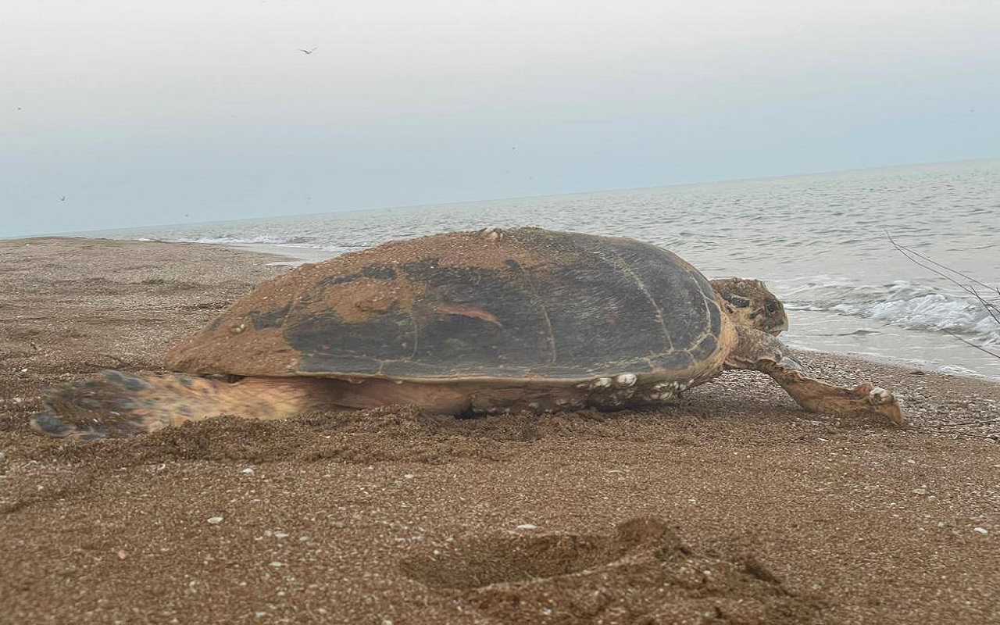
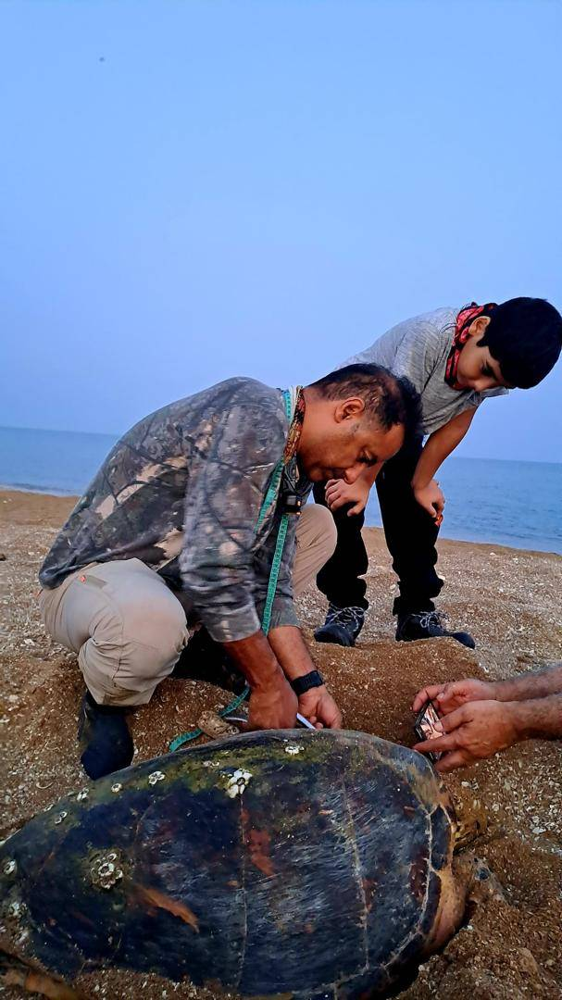
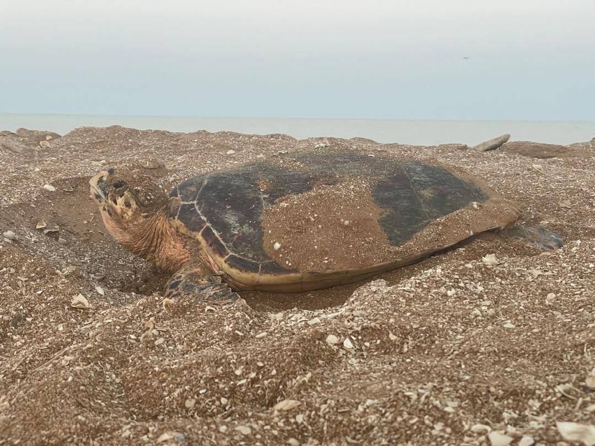
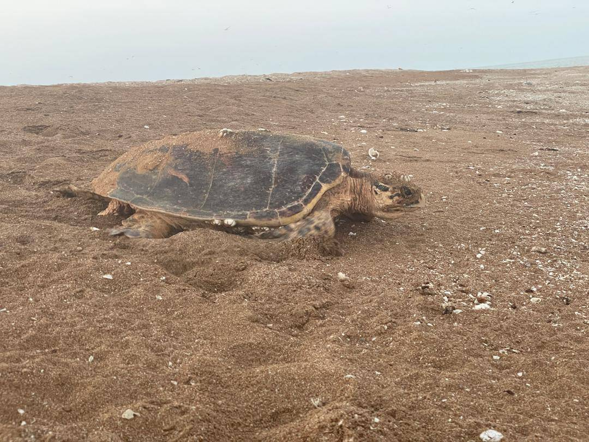
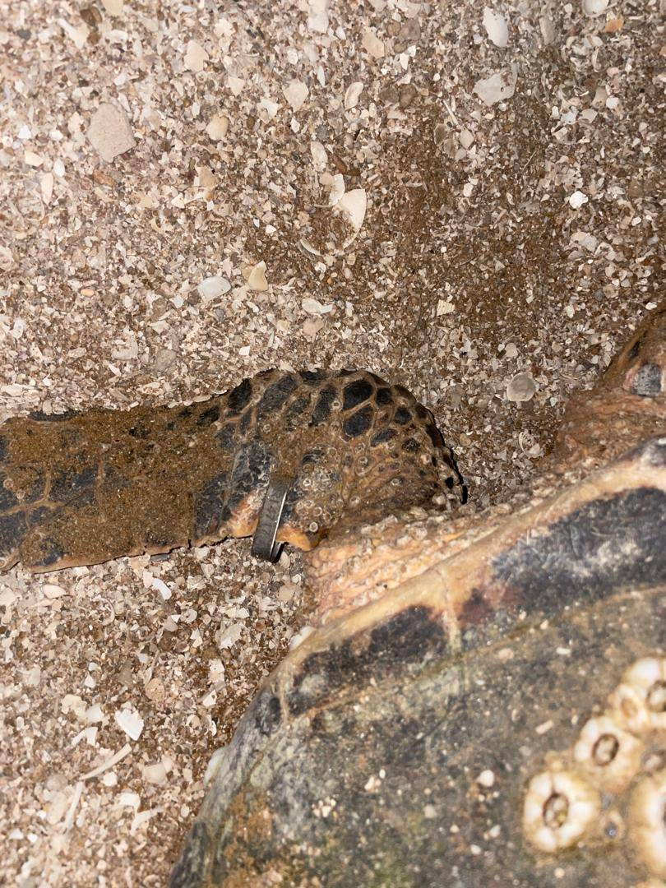
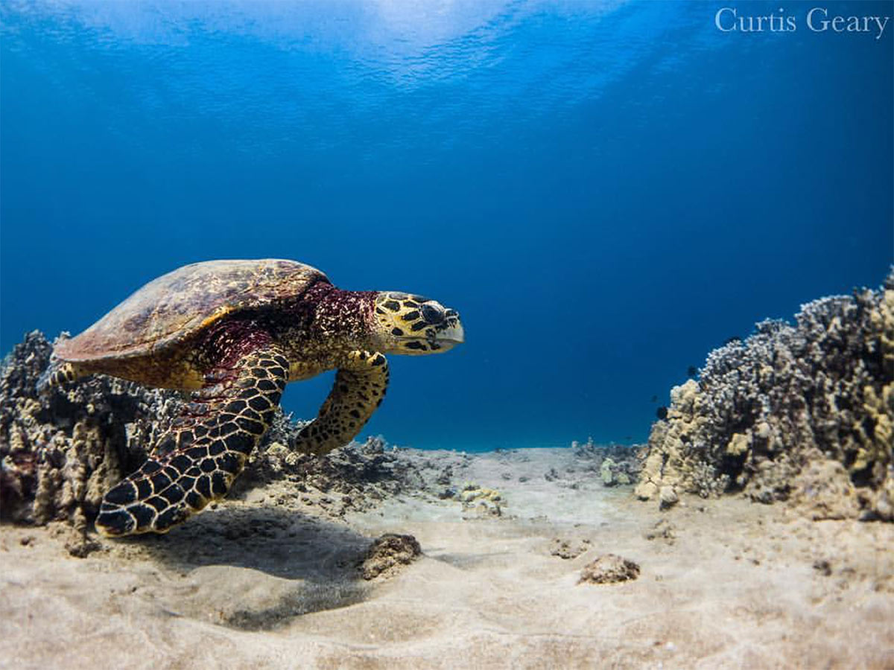
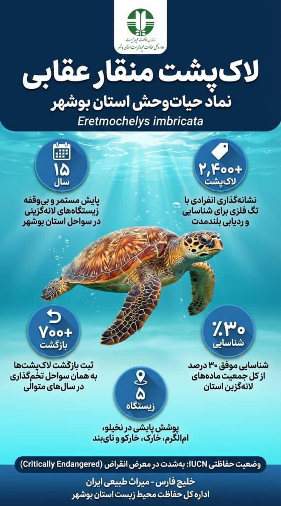

Hawksbill Sea Turtle
Eretmochelys imbricata
روند کاهش جمعیت جهانی این گونه نگرانکننده و شتابان است
IUCN Red List: Critically Endangered — global population in steep, accelerating decline
Wildlife Symbol of Bushehr Province, Persian Gulf
لاکپشت دریایی منقار عقابی بهعنوان نماد حیاتوحش استان بوشهر معرفی شده است؛ انتخابی که هم بازتابدهنده ارزشهای بومشناختی این منطقه و هم یادآور ضرورت حفاظت از یکی از در معرضتهدیدترین گونههای دریایی جهان است.
پارک ملی دیر ـ نخیلو در سواحل خلیج فارس، از مهمترین زیستگاههای تخمگذاری لاکپشتهای منقار عقابی در کشور به شمار میآید و آبهای کمعمق آن، محل تغذیه ارزشمندی برای لاکپشتهای سبز است. جزایر غیرمسکونی اُمالگُرم و نخیلو که از حضور شکارگرانی مانند روباه و شغال خالی هستند، سواحلی بکر و امن را برای لانهگزینی این گونه فراهم کردهاند.
از آنجا که تنها بخش بسیار اندکی از نوزادان این گونه تا سن بلوغ زنده میمانند، از دست رفتن هر بخش از زیستگاههای تخمگذاری میتواند پیامدهایی جبرانناپذیر به همراه داشته باشد.
The Hawksbill sea turtle has emerged as the official wildlife emblem of Bushehr Province, a choice that reflects both the ecological value of the region and the urgent need to conserve one of the world's most threatened marine species.
Located along the Persian Gulf coast, Dayyer–Nakhiloo National Park serves as one of the country's most significant nesting grounds for the Hawksbill sea turtle, while its shallow coastal waters provide rich foraging areas for Green turtles. The uninhabited islands of Om-al-Gorm and Nakhiloo, free from terrestrial predators such as foxes and jackals, offer rare undisturbed beaches where turtles can safely lay their eggs.
پارک ملی دیر ـ نخیلو و جزایر اُمالگُرم و نخیلو، سواحلی بکر و عاری از شکارگر برای لانهگزینی فراهم میکنند.
Dayyer–Nakhiloo National Park — predator-free nesting beaches along the Persian Gulf.
صیادی فشرده و توسعه شتابان سواحل زیستگاهها را تکهتکه کرده و چرخههای حیاتی را مختل میکند.
Intensive fishing and rapid coastal development fragment habitats and disrupt life cycles.
با تغذیه از اسفنجها سلامت مرجانها را حفظ کرده و تعادل زنجیره غذایی دریا را برقرار میکنند.
By feeding on sponges, they maintain healthy coral reefs and balance marine trophic levels.
تگگذاری فلزی فردی برای شناسایی هر لاکپشت و پیگیری بازگشتهای مکرر به همان ساحل طی سالهای متوالی.
Metal tagging identifies individual turtles and tracks multi-year beach-return fidelity.
The Complete Conservation Story
لاکپشت منقار عقابی در فهرست گونههای بهشدت در معرض خطر انقراض قرار دارد و روند کاهش جمعیت آن در سطح جهانی نگرانکننده است. از آنجا که تنها بخش بسیار اندکی از نوزادان این گونه تا سن بلوغ زنده میمانند، از دست رفتن هر بخش از زیستگاههای تخمگذاری میتواند پیامدهایی جبرانناپذیر به همراه داشته باشد.
امروزه مهمترین تهدیدهای این گونه ناشی از صیادی فشرده و توسعه شتابان سواحل است. برداشت بیرویه از منابع دریایی همراه با گسترش سکونتگاهها و پروژههای عمرانی در نوار ساحلی، موجب تکهتکه شدن زیستگاهها و اختلال در چرخههای حیاتی لاکپشتها میشود؛ آسیبی که جبران آن ممکن است دههها زمان ببرد.
فراتر از ارزش نمادین، لاکپشتهای دریایی نقش مهمی در پایداری اکوسیستمهای دریایی دارند. آنها با تغذیه از گونههای پررشد، از جمله اسفنجها، به حفظ سلامت زیستبومهای مرجانی و تعادل سطوح تغذیهای کمک میکنند. این جانوران تقریباً تمام عمر خود را در دریا میگذرانند و تنها مادهها برای تخمگذاری، در بازهای کوتاه به ساحل میآیند؛ لحظهای بسیار حساس برای گونهای که به زندگی دریایی سازگار شده است.
با توجه به حساسیت بالای این زیستگاهها، این منطقه ابتدا بهعنوان «منطقه حفاظتشده» معرفی شد و در میانه دهه ۱۳۸۰ به پارک ملی ارتقا یافت تا امکان مدیریت و حفاظت مؤثرتر فراهم شود.
امروزه برنامههای پایش در فصل تخمگذاری، دادههای مهمی درباره روند جمعیتی و وضعیت سلامت لاکپشتها فراهم میکند. در این دوره، عملیات نشانهگذاری و زیستسنجی انجام میشود تا فردبهفرد لاکپشتها شناسایی و مراجعات مکرر آنها به همین سواحل طی سالهای متوالی ثبت شود؛ رفتاری که در این جمعیت بهخوبی مستند شده است.
پس از بیش از پانزده سال تلاش پیوسته حفاظتی و پایشی، کارشناسان بر این باورند که تداوم این اقدامات میتواند آیندهای امنتر برای لاکپشت منقار عقابی در سواحل جنوبی ایران رقم بزند و این نماد زنده از میراث طبیعی بوشهر را برای نسلهای آینده حفظ کند.
The Hawksbill sea turtle is listed as critically endangered, with global populations in steep decline. Given that only a small fraction of hatchlings ever survive long enough to reproduce, any loss of nesting habitat can have irreversible consequences for the species.
Today, the main pressures facing these turtles stem from intensive fishing activity and rapid coastal development. Overfishing, combined with expanding human settlements and infrastructure projects along the shoreline, threatens to fragment nesting habitats and disrupt vital life cycles — ecological damage that may take decades to repair.
Beyond their symbolic value, sea turtles are key architects of marine ecosystems. By feeding on fast-growing species such as sponges, they help maintain healthy coral reef systems and balance lower trophic levels. They spend nearly their entire lives at sea; only the females briefly come ashore to lay eggs — a vulnerable moment for an animal evolutionarily adapted to the water.
Recognizing the sensitivity of these habitats, authorities first declared the area protected and later upgraded it to national park status in the mid-2000s, enabling tighter management and stronger legal safeguards.
Ongoing monitoring programs during the nesting season now provide essential data on population trends and turtle health. Tagging and biometric surveys are being conducted to identify individual turtles and track their return to the same beaches over multiple years — a behavior well documented in this population.
With more than 15 years of continuous conservation work already undertaken, experts believe that sustained protection and scientific monitoring can help secure the future of the Hawksbill sea turtle along Iran's southern shores — and preserve a living emblem of Bushehr's natural heritage.
حفاظت از لاکپشت منقار عقابی تنها نگهداری یک گونه نیست؛ این تلاش، پاسداری از میراث طبیعی خلیج فارس و مسئولیتی است که ما در برابر نسلهای آینده داریم. استان بوشهر با انتخاب این گونه بهعنوان نماد حیاتوحش خود، پیامی روشن به جهان میفرستد: طبیعت ما، هویت ماست.
Hawksbill Sea Turtle in the Wild






Key Facts at a Glance

From Protected Zone to National Park
منطقه برای اولین بار با عنوان «منطقه حفاظتشده» به ثبت رسید
امکان مدیریت و حفاظت مؤثرتر از طریق ارتقای رتبه به پارک ملی
بیش از ۲۴۰۰ لاکپشت نشانهگذاری و بیش از ۷۰۰ بازگشت مستند شده است
به ابتکار عبدالرحمن مرادزاده، مدیر کل حفاظت محیط زیست، این گونه به نماد استان برگزیده شد